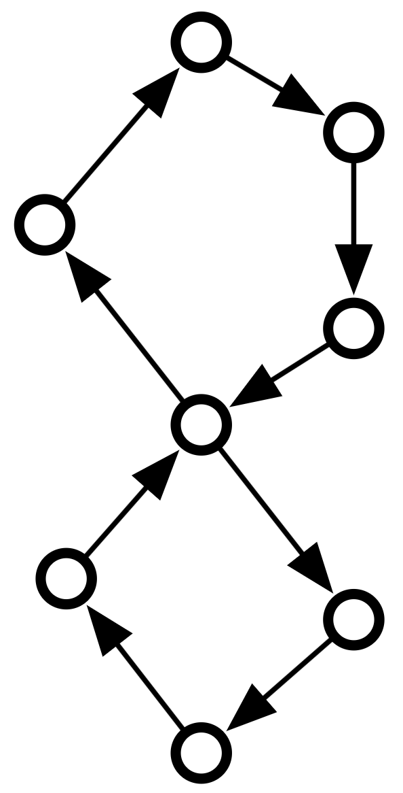
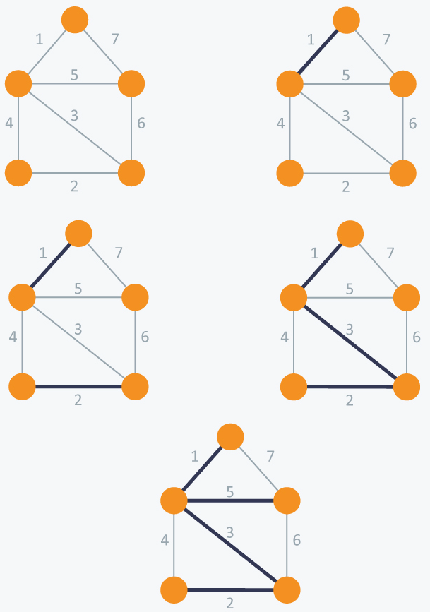

同余约束下的组合优化问题
招人
\(\newcommand{\R}{\mathbb{R}}\) \(\newcommand{\Z}{\mathbb{Z}}\) \(\newcommand{\N}{\mathbb{N}}\)
- 算法与逻辑团队：组合优化，图论，机制设计，计算代数，实验算法，精确算法，分配机制，算法博弈论，逻辑
- 本人：组合优化，发Mathematical Programming
- 博士后：组合优化或者其他较为理论的运筹方向
- 博士生：理论计算机任意方向
- 邮件：
the.chao.xu@gmail.com
计算复杂性
- P与NP的边界在哪里？
- P里的组合优化问题，加上同余约束之后，计算复杂性会怎么改变？
大纲
- 同余约束的例子和应用
- 拟阵零基问题的进展
同余约束的例子和应用
组合优化与同余
- 组合优化考虑的是组合结构上的最优化结构。 \[\min_{X\in \mathcal{F}} f(X)\]
- 可行空间是 \(\mathcal{F} \subseteq 2^V = \{0,1\}^{|V|}\)。
- \(f:\{0,1\}^{|V|}\to \R\)。
- 可以想象组合优化是整数规划的特殊形式。
- 同余：对于任意整数，\(a,b,n\), 我们定义关系\(a\equiv b \pmod n\)，意思为 \(a-b\) 可以被\(n\)整除。则称\(a\)与 \(b\)对模\(n\)同余。
研究同余约束的动机
- 应用
- 为周期性事件建模
- 理论
- 同余约束是精确约束的松弛
- \(\Delta\)-modular ILP
- 环的长度
例子：最小权值完美匹配
- 匹配是一些互不相交的边，完美匹配是包含每个顶点的匹配。
- 输入： 一个图，\(G=(V,E)\) 每个边的权值 \(w:E\to \R\).
- 输出： 权值最小的完美匹配
- \(\mathcal{F} \subset 2^E\)为所有完美的匹配的集合。
- \(f(X) = \sum_{x\in X} w(e)\).
- 存在多项式时间算法（如匈牙利算法）
精确约束
精确完美匹配问题
给一个二分图\(G=(V,E)\)，红色的边\(R\subseteq E\)，和整数\(k\)。找到权值最小的\(k\)条红色边的完美匹配。
\[\min_{X\in \mathcal{F}, |X\cap R|=k} f(X)\]
是否存在多项式时间算法？
- RP：存在随机多项式时间算法 (Papadimitriou and Yannakakis 1982)。
- P: 40年未解的问题

同余约束
偶数完美匹配问题
给一个二分图\(G=(V,E)\)，红色的边\(R\subseteq E\)。找到权值最小的偶数条红色边的完美匹配。
\[\min_{X\in \mathcal{F}, |X\cap R| \equiv 0\pmod 2} f(X)\]
- 存在多项式时间算法! (El Maalouly, Steiner, and Wulf 2023)
- 应用：通过研究同余约束来研究精确约束
例子：线性整数规划（ILP）
- \(\max cx\)，s.t. \(Ax\leq b\). 整数规划问题是NP-hard问题。
- 什么情况下有多项式时间算法？
- 常数个变量或者约束 (Lenstra 1983)
- \(A\)是个全幺模矩阵
- \(A\)是\(2\)-modular矩阵 (Artmann, Weismantel, and Zenklusen 2017)
全幺模矩阵
- 一个整数矩阵\(A\)的各阶子式为\(-1,0\)或者\(1\)，则\(A\)是个全幺模矩阵。
- LP松弛最优 = ILP最优
全幺模矩阵为约束矩阵的LP：
- 存在多项式时间算法 (Khachiyan 1979)
- 存在强多项式时间算法 (Tardos 1986)
\(\Delta\)-modular ILP
定义 (\(\Delta\)-modular)
如果整数矩阵\(A\)的各阶子式均属于 \(\{-\Delta, -\Delta+1,\ldots,0,\ldots,\Delta\}\), 则 \(A\) 是个\(\Delta\)-modular矩阵.
猜想
对于任意常数\(\Delta\)，当\(A\)为\(\Delta\)-modular矩阵，则\(A\)为约束矩阵的整数规划问题存在多项式时间算法。
当\(A\)为 \(2\)-modular矩阵，则\(A\)为约束矩阵的整数规划问题存在强多项式时间算法。
同余约束的优化问题
\(2\)-modular的解决来自于将问题规约到多个加了同余约束的全幺模矩阵整数规划问题。
\(\max \{cx | Ax\leq b, a x \equiv 0 \pmod 2, x\in \Z^n \}\), \(A\)为全幺模矩阵。
整数规划下的同余约束
- \(\max \{cx|Ax\leq b, ax \equiv d\pmod m\}\) 是一个多了同余约束的整数规划问题。
- 可以替换同余约束为\(ax = km + d\)约束，其中\(k\)是整数变量。
例子: 环
环
输入一个有向图，找到一个环。
- 环：在图上做深度优先搜索。
- 奇数条边的环
- 找到奇数条边的回路 (存在多项式时间算法)
- 一定包含一个奇数条边的环。

例子: 环
环
输入一个有向图，找到一个环。
- 偶数条边的环
- 用到图子式理论里的重大定理 (Robertson, Seymour, and Thomas 1999)
- 边数为\(0\pmod b\)的环，\(b\geq 3\)。
- OPEN!
- 边数为\(a \pmod b\)的环, \(b\geq 3\), \(a\neq 0\)。
- NP-hard! (Arkin, Papadimitriou, and Yannakakis 1991)
其他近年的进展
- 次模函数最小化问题在模\(m\)同余约束下有多项式时间算法，如果\(m=p^k\)，\(p\)是质数。(Nägele, Sudakov, and Zenklusen 2019)
- CSP问题在模\(m\)同余约束下有多项式时间算法。如果\(m=p^k\)，\(p\)是质数。但如果\(m\)至少有两个不同的质因子，则不存在多项式时间算法（假设\(P\neq NP\)）(Brakensiek, Gopi, and Guruswami 2022)。
- 拟阵交上模\(2\)同余约束都是NP-hard (Hörsch et al. 2024)。
- 拟阵上零基问题的进展 (Liu and Xu 2024)。
拟阵零基问题的进展
拟阵
- 考虑拟阵 \(M=(E,\mathcal{I})\)
- 其中\(\mathcal{I}\subseteq 2^E\)，叫做独立集。
- 让\(\mathcal{B}\)是所有的极大的独立集，叫做基。
- \(\mathcal{B}\)要满足：
- \(\mathcal{B}\)是非空的。
- 如果\(A,B\in \mathcal{B}\)，则对于任意\(a\in A\setminus B\), 存在\(b\in B\setminus A\)使得\(A-a+b\in \mathcal{B}\).
常见的拟阵
- 对于向量\(V=\{v_1,\ldots,v_n\}\), 线性拟阵 \(M = (V,\mathcal{I})\), 其中独立集为线性无关的集合。基为（线代里的）基。
- 对于一个联通图\(G=(V,E)\)，图拟阵 \(M(G)=(E,\mathcal{I})\)，其中独立集为所有无环子图。基为所有的生成树。
| 拟阵 | 独立集 | 基 |
|---|---|---|
| 线性拟阵 | 线性无关集合 | 基 |
| 图拟阵 | 无环子图 | 生成树 |
图拟阵例子
- 基是生成树
- 去掉一个边，可以找另一个边替换，获得新的基
拟阵最优基算法
最优基算法
- \(S\gets \emptyset\)
- while \(S\not\in \mathcal{B}\)
- \(S\gets S\cup \{e\}\), \(e\in E\setminus S\)且\(w(S\cup \{e\})\)最小，且\(S\cup\{e\}\in \mathcal{I}\)。
- 输出\(S\)

同余约束的零基问题
零基问题
给定一个拟阵\(M=(E,\mathcal{I})\)和一个标签函数\(\ell:E\to \Z_m\)，找到一个基\(B\)，使得\(\sum_{e\in B} \ell(B) \equiv 0 \pmod m\).
模\(2\)的特例的另一个描述方式：
偶数基问题
给定一个拟阵\(M=(E,\mathcal{I})\)和一些红色的元素\(R\subseteq E\)，找到一个基\(B\)，使得\(|B\cap R|\equiv 0\pmod 2\).
最优偶数基
最优偶数基算法
- \(B\)为最优基
- for \(x\in B, y\in E\setminus B\):
- if \(B-x+y \in \mathcal{B}\) 且 \(|B\cap R|\equiv 0\pmod 2\)
- 将 \(B-x+y\) 加入可行的解之一
- if \(B-x+y \in \mathcal{B}\) 且 \(|B\cap R|\equiv 0\pmod 2\)
- 从所有可行解中取出权值最小的
- 如果存在一个最优偶数基距离最优基差距为一个元素，则算法是正确的。
- 算法的确是正确的！
- 可以推广到模\(m\)的零基吗？
邻近猜想
可行解邻近猜想
一个拟阵如果在标签模\(m\)下存在零基，则对于任何基\(B\)，存在一个零基\(D\)，使得\(|B\setminus D|\leq m-1\)。
最优解邻近猜想
一个拟阵如果标签模\(m\)下存在零基，则对于任何最优基\(B\)，存在一个最优零基\(D\)，使得\(|B\setminus D|\leq m-1\)。
猜想进展
定理 (Liu and Xu 2024)
- 可行解邻近猜想在\(m=pq\)或者\(m=p^k\)时是成立的，这里\(p\)和\(q\)都是质数
- 最优解邻近猜想在\(m\leq 5\)的时候是成立的。
- 可行解邻近猜想可以使用加性组合中的Schrijver-Seymour猜想证明。
- 但是最优解邻近猜想没法使用上述猜想，但对于任意\(m\)，可以归约到一个有限的问题，从而可以用计算机辅助证明。
计算问题
- 目标：对指定的\(m\)，获得一个计算问题，可以验证猜想是否是对的。
- 一个拟阵\(M=(E,\mathcal{I})\)是个块拟阵，如果\(E\)是两个不相交的基的并。
- 一个基的补集也是基，则这个基被称为块。
- 一个标签函数隔离一个块\(B\)，如果没有任何其他块和它标签一样。
计算问题
块隔离猜想
对于大小为\(2m\)的块拟阵，任意标签函数都无法模\(m\)后隔离一个块。
- 块隔离猜想对\(m\)成立 \(\implies\) 最优解邻近猜想对\(m\)成立。
- 测试每一个大小为\(2m\)的拟阵，每一个标签函数，是否都无法隔离一个块。
- 这所需要花的时间是\(N(2m)m^{2m}\)，而\(N(m)\)是一个大小为\(2m\)的块拟阵的个数（这个数字非常大！）。
- 更好的解决方案是把问题变成一个约束求解问题。
约束求解
用于证明块隔离猜想对\(m\)为真约束求解问题
是否存在函数\(B:{E\choose m} \to \{0,1\}\)和\(\ell:E\to \Z_m\)，满足下列条件
- 固定的块：\(A = \{0,\ldots,m-1\}\)
- 固定块约束：\(B(A)=B(E\setminus A)=1\).
- 拟阵约束: 对于任意\(X,Y\in {E\choose m}\), \(x\in X\setminus Y\), \(B(X) \wedge B(Y) \implies \bigvee_{y\in Y\setminus X} B(X-x+y)\).
- 块同余约束：对于任意\(X\in {E\choose m}\)，\[\begin{align*}B(X)&\wedge B(E\setminus X) \\ \implies &\sum_{x\in X} \ell(x) \not \equiv \sum_{x\in A} \ell(x) \pmod m \end{align*}\]
约束求解
- 利用Z3来解决，Z3是一个SMT求解器，很适合做约束求解。
from z3 import *
from itertools import combinations, product
m = 3
r = m
n = 2*r
E = frozenset(range(n))
E_choose_r = [frozenset(X) for X in list(combinations(E, r))]
# isolated block
B = frozenset(range(r))
def exchange(X,x,y):
return (X-frozenset([x]))|frozenset([y])
s = Solver()
# boolean variable indicates a base
base = dict()
for X in E_choose_r:
base[X] = Bool(str(X))
# variable for label of each element
label = dict()
for x in E:
label[x] = Int(str(x))
s.add(label[x]<=m-1)
s.add(label[x]>=0)
# B is a block, hence a block matroid
s.add(And(base[B],base[E-B]))
# matroid constraint: for base X, Y and x in X-Y, there is y in Y-X s.t. X-x+y is a base
for X in E_choose_r:
for Y in E_choose_r:
for x in X-Y:
s.add(Implies(And(base[X],base[Y]),Or(*[base[exchange(X,x,y)] for y in Y-X])))
# block constraints: X and E-X are bases, then l(X)%m != l(B)%m
for X in E_choose_r:
if X!=B:
s.add(Implies(And(base[X],base[E-X]),Sum([label[x] for x in X])%m != Sum([label[x] for x in B])%m))
# check if satisfiable
if s.check()==sat:
print(s.model())
else:
print("unsat")未来工作
- 最优解邻近猜想在\(m=6\)的时候是否成立？
- 两个不同质数的乘积。
- 二分图的最小权值偶数红色边完美匹配存在多项式时间算法
- 非二分图呢？